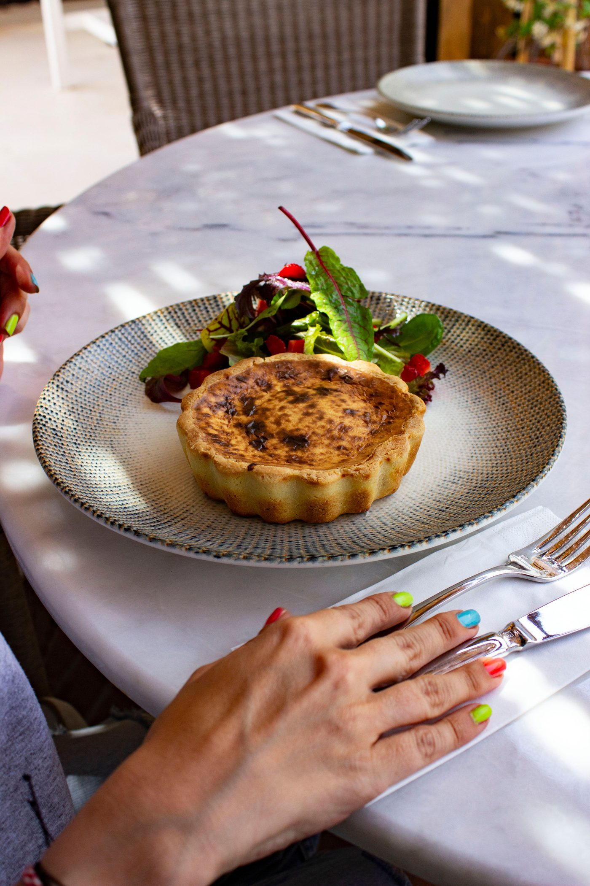
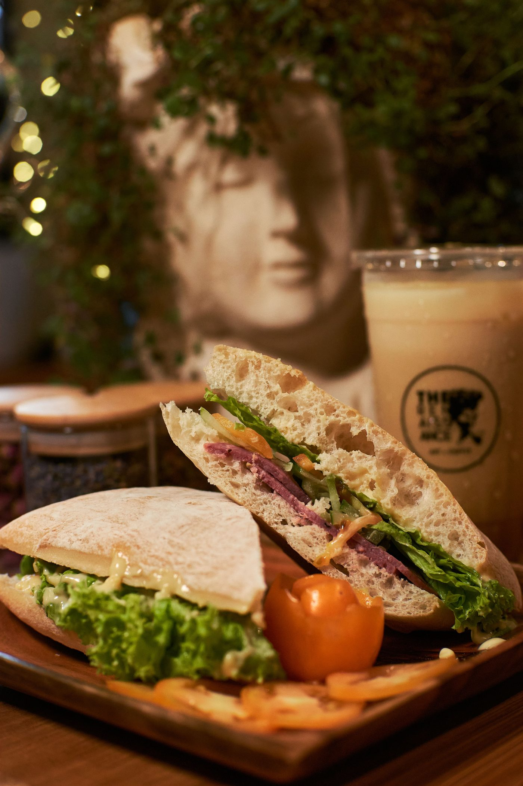
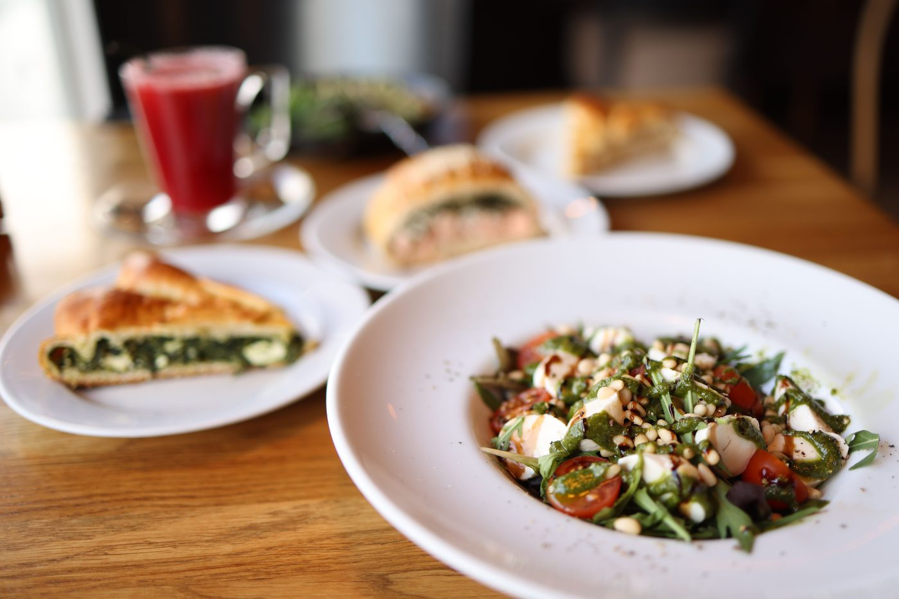

A lunch cafe in Pensacola
Cottage Cafe serves lunch: quiches, wraps, sandwiches, gigantic salads including curry chicken salad and tri-tip taco salad, 6 types of bread pudding including blackberry and blueberry, gooey butter cakes, and flavored coffees, with indoor and dog-friendly outdoor seating, takeout and delivery, and no reservations.

Cottage Cafe sits at 203 W Gregory St in Pensacola. The lunch cafe serves quiches, wraps, sandwiches, gigantic salads, bread pudding, gooey butter cakes, and flavored coffees, with indoor and dog-friendly outdoor seating, takeout and delivery.


203 W Gregory St, Pensacola, FL 32502
Monday to Friday, 11:00 AM to 2:00 PM